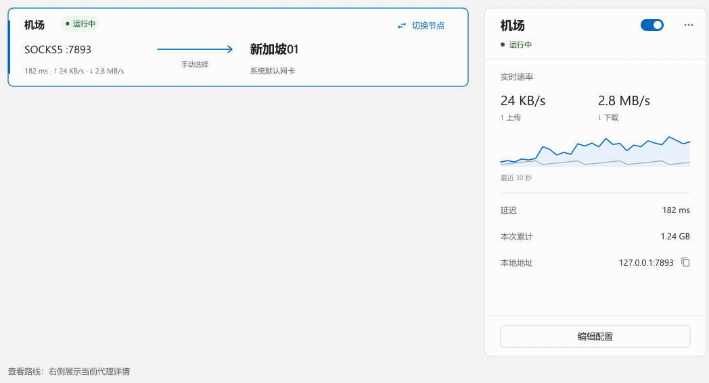
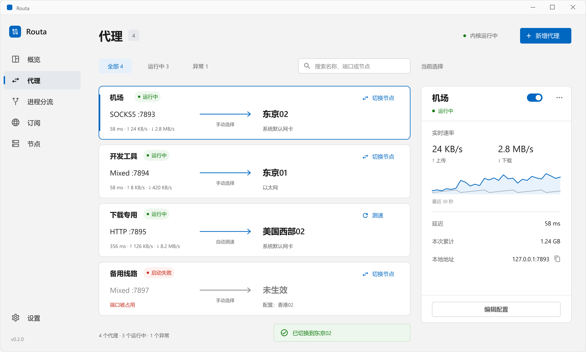

方向 C · 路线工作台
独立设计原型 · 虚构数据。点击路线可查看详情，点击“切换节点”可在右侧原位选择、确认和重试。其他控件用于视觉评审。
路线负责总览，右侧负责当前选择的详情和操作。固定 328px 详情面板 · 固定操作区域
总览 → 聚焦
选择代理时以轻描边定位，右侧局部淡入。其余路线位置不动，不为选中项额外插入内容。
切换 → 生效
候选列表在同一个右侧面板内显示；当前路线始终可见。确认生效后再更新节点名与延迟。
失败 → 重试
错误留在预留反馈区，保留候选选择；区分请求失败与已保存未生效。端口冲突未解决时，主路线保持未生效。
在同一个面板内完成节点切换

